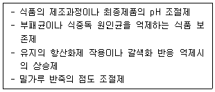

수산제조기사 (2003-05-25 기출문제)
1과목: 식품위생학
1. 식품첨가물의 사용 목적에서 가장 거리가 먼 것은?
- 기호성 증진
- 변질방지
- 발암방지
- 영양강화
(정답률: 알수없음)

2. 다음과 같은 목적과 기능을 하는 식품 첨가물은?

- 산미료(acidulant)
- 조미료(seasoning)
- 호료(thickening agent)
- 유화제(emulsifier)
(정답률: 알수없음)
3. 우유의 저온살균에 대한 설명 중 틀린 것은?
- Q열의 원인균인 리켓치아속에 속하는 세균도 사멸된다.
- 결핵균도 사멸된다.
- 살균 후에도 상당한 수의 세균이 존재하는 것이 보통이다.
- 포스파타아제(phosphatase) 양성으로 나타난다.
(정답률: 알수없음)
4. 우리나라에서 물엿, 알사탕 등의 표백제로 사용하여 크게 물의를 일으켰던 유해성 물질은?
- Nitrogen trichloride
- Rongalite
- Formaldehyde
- Benzyl violet
(정답률: 알수없음)
5. 식품위생상 유해한 감미료와 거리가 먼 것은?
- cyclamate
- dulcin
- D-sorbitol
- p-nitro-o-toluidine
(정답률: 알수없음)
6. 공장폐수에서 발생할 수 있는 유해물질 및 식품오염문제를 연결한 것 중 잘못된 것은?
- 석유폐수 → 3,4 - Benzopyrene → 발암물질
- 광업소폐수 → 카드뮴(Cd) → 미나마타병
- 펄프공장폐수 → 석탄 타르(tar) → 조개류의 쓴맛
- 구리정련공장폐수 → 구리(Cu) → 녹색 굴
(정답률: 알수없음)
7. 다음 설명 중 경구전염병과 거리가 먼 것은?
- 비교적 소량의 균량으로 발생한다.
- 잠복기가 비교적 길다.
- 2차 감염이 거의 발생하지 않는다.
- 집단적으로 발생한다.
(정답률: 알수없음)
8. 발진티푸스의 균명은?
- Bacillus anthracis
- Salmonella paratyphi
- Rickettsia prowazeki
- Mycobacterium tuberculosis
(정답률: 알수없음)
9. 다음 중 옳게 연결된 것은?
- 간흡충 - 왜우렁이 - 쇠고기
- 광절열두조충 - 물벼룩 - 게
- 유구조충 - 돈육 - 낭미충증
- 아니사키스충 - 개 - 고등어
(정답률: 알수없음)
10. 정수시설(淨水施設)의 침전지에서 약품침전의 목적으로 사용하는 것은?
- 명반
- 붕산
- 염소
- 표백분
(정답률: 알수없음)
11. 식품취급자의 손 소독에 가장 적합한 약제는?
- 크레졸 비누액
- 역성비누액
- 포르말린
- 승홍수
(정답률: 알수없음)
12. 투과력이 크며 식품 저장에 널리 이용되고 있는 방사선은?
- 가시광선
- α 선
- β 선
- γ선
(정답률: 알수없음)
13. 동물성 식품의 변질검사에 해당되는 것은?
- 히스타민(histamine) 측정
- 산도(酸度) 측정
- 카르보닐가 측정
- 요오드가 측정
(정답률: 알수없음)
14. 동물성 식품에서 유래된 독소는?
- 무스카린(muscarine)
- 아미그달린(amygdalin)
- 베네루핀(venerupin)
- 에르고톡신(ergotoxin)
(정답률: 알수없음)
15. 플라스틱의 감별을 위한 방법으로 이용할 수 있는 물리적인 특성이 아닌 것은?
- 비중
- 경도
- 용해성
- 연소성
(정답률: 알수없음)
16. 전염병으로 죽은 돼지를 삶아서 먹었음에도 불구하고 사망자가 발생하였다면 다음 중 어느 균에 의한 발병일 가능성이 있는가?
- 결핵
- 탄저
- 야토병
- 브루셀라
(정답률: 알수없음)
17. 식품공장의 위생상태를 유지 관리하기 위하여 일반적인 조치 사항 중 가장 맞는 것은?
- 작업장과 화장실은 2일 1회 이상 청소하여야 한다.
- 온도계와 같은 계기류는 유명회사 제품을 사용하면 자체 점검할 필요가 없다.
- 우물물을 사용하는 경우 정기적으로 공공기관에 수질검사를 받고 그 성적서를 보관한다.
- 냉장시설과 창고는 월 1회 이상 청소를 하여야 한다.
(정답률: 알수없음)
18. 비브리오 패혈증의 예방대책을 설명한 것 중 틀린 것은?
- 간장 질환자는 해수욕을 가급적 삼가한다.
- 생선회 원료는 수돗물에 잘 씻는다.
- 서해안에 강물이 유입되는 장소는 균의 증감을 감시한다.
- 생선회를 냉장고에 일정시간 보관하였다가 먹는다.
(정답률: 알수없음)
19. 농약에 의한 식품오염에 대한 설명으로 적합하지 않은 것은?
- 유기인제 농약은 대부분 극독약이므로 급성중독에 의한 사고가 많다.
- 농작물에 살포된 농약은 비, 바람, 햇빛 등의 외적작용과 작물의 성장, 대사 등의 내적작용에 의하여 분해된다.
- 유기염소제 농약은 제조사용이 금지되어 있지만 아직도 토양에서 검출되고 있다.
- 유기수은제 농약은 축적성이 거의 없다.
(정답률: 알수없음)
20. 식품의 부패검사법 중 화학적 검사법이 아닌 것은?
- 휘발성 아민 측정
- 식물성 식품의 산도측정
- 어육의 단백질 침전 반응
- 경도측정
(정답률: 알수없음)
2과목: 수산화학
21. 해수어(海水魚)의 자기소화 작용의 적온은?
- 0℃-10℃
- 10℃-20℃
- 40℃-50℃
- 60℃-70℃
(정답률: 알수없음)
22. 다음 중 지질의 불포화도를 나타내는 척도는?
- 과산화물값
- 산값
- 요오드값
- 카르보닐값
(정답률: 알수없음)
23. 패류의 정미성분으로 알려진 것은?
- betaine
- inosinic acid
- succinic acid
- guanylic acid
(정답률: 알수없음)
24. 선도가 저하된 꽁치나 고등어에 의하여 발생하는 식중독의 원인 물질은?
- 히스타민(histamine)
- 프토마인(ptomaine)
- 타이라민(tyramine)
- 퓨트레신(putrescine)
(정답률: 알수없음)
25. 핵산 관련 물질 분석에 주로 사용되고 있는 추출법은?
- 피크린산(picric acid) 추출법
- 에타놀(ethanol) 추출법
- 과염소산(perchloric acid) 추출법
- 열수 추출법
(정답률: 알수없음)
26. 다음 중 참치류의 녹변에 관여하는 성분과 관계가 먼 것은?
- met-myoglobin
- Hydrogen sulfide
- Verdoglobin
- Hemocyanin
(정답률: 알수없음)
27. 염수 동결한 가다랭이를 통조림할 때 생기는 orange meat 생성과 가장 관계가 먼 것은?
- glucose-6-phosphate 와 fructose-6-phosphate
- histidine
- anserine 과 carnosine
- trimethylamine oxide
(정답률: 알수없음)
28. 갑각류의 껍질에 함유되는 키토산의 구성 성분은?
- 글루코사민(Glucosamine)
- 포코스(Focose)
- 글루구론산(Gluculonic acid)
- 만루론닉산(Mannuronic acid)
(정답률: 알수없음)
29. 일반적으로 통조림 원료로 사용되는 어패육의 휘발성 염기질소 함량의 한계점은?
- 10 mg% 이하
- 20 mg% 이하
- 30 mg% 이하
- 40 mg% 이하
(정답률: 알수없음)
30. 미생물의 증식 곡선 중 증식하는 세균수가 죽는 세균수보다 현저하게 적은 기간을 무엇이라고 하는가?
- 정지기(stationary phase)
- 감수기(decreasing phase)
- 대수기(logarithmic phase)
- 잠복기(lag phase)
(정답률: 알수없음)
31. 다음 중 부패과정에 있어서 아미노산의 탈탄산반응에 의하여 생성되는 것은?
- 알데히드류
- 케톤류
- 아민류
- 알콜류
(정답률: 알수없음)
32. 김의 붉은 색을 나타내는 것은?
- phycocyanin
- phycoerythrin
- astaxanthin
- bile pigment
(정답률: 알수없음)
33. 어육 1g 중의 세균수가 얼마일 때, 초기부패라고 할 수 있는가?
- 102 – 103
- 103 - 104
- 105 – 106
- 106 - 107
(정답률: 알수없음)
34. 한천질 다당류의 구성 단위는?
- alginic acid
- agarobiose
- glucose
- amylopectin
(정답률: 알수없음)
35. 다음 중 수산물의 신선도를 측정하기 위한 휘발성 염기질소(VBN)법에서 측정 대상이 되지 않는 성분은?
- 암모니아(Ammonia)
- 트리메틸아민(Trimethylamine)
- 디메틸아민(Dimethylamine)
- 황화수소(Hydrogen sulfide)
(정답률: 알수없음)
36. 어육을 메탄올-클로로포름 혼합용매로서 마쇄하였을 때 기름은 어떻게 분리하는가?
- 메탄올층으로 분리되어 나오므로 상층을 따라내면 된다.
- 안정한 에멀죤이 되므로 분리할 수가 없다.
- 클로로포름 층으로 분리되어 나온다.
- 물,메탄올-클로로포름층의 중간층으로 분리한다.
(정답률: 알수없음)
37. 어패류 근육 중에서 검출되지 않는 유기산은？
- 구연산(citric acid)
- 푸말산(fumaric acid)
- 피크린산(picric acid)
- 피루브산(pyruvic acid)
(정답률: 알수없음)
38. 다음 중 어패류의 사후변화 과정을 바르게 나타낸 것은?
- 해당작용-사후경직-해경-자기소화-부패
- 해당작용-해경-사후경직-자기소화-부패
- 해당작용-사후경직-자기소화-해경-부패
- 해당작용-해경-자기소화-사후경직-부패
(정답률: 알수없음)
39. 젤라틴은 어디서 유도된 것인가?
- 염용성 단백질
- 근형질 단백질
- 근원섬유 단백질
- 근기질 단백질
(정답률: 알수없음)
40. 산화된 어유의 갈변에 가장 필수적인 인자는？
- 아미노화합물
- 암모니아
- 알칼리(alkali)
- 무기염류
(정답률: 알수없음)
3과목: 수산가공학
41. 물간에 의한 염장품 제조에 맞는 것은?
- Bé20° 의 염수에 6-12시간 정도 절인다.
- Bé22° 의 염수에 8-15시간 정도 절인다.
- Bé24° 의 염수에 18-20시간 정도 절인다.
- Bé26° 의 염수에 21-24시간 정도 절인다.
(정답률: 알수없음)
42. 알긴산 겔의 특성이 아닌 것은?
- 알긴산은 이가 양이온과 반응하여 겔을 형성.
- 해조내의 알긴산은 대부분 Ca염의 형태로 존재한다.
- M/G 비율이 높은 알긴산은 겔 강도가 강하다.
- 알긴산 겔은 알긴산 칼슘겔에 비해 물성이 부드럽다.
(정답률: 알수없음)
43. 어묵 제조시에 쓰이는 부재료가 아닌 것은?
- MSG
- 감자전분
- 유지
- 인산염
(정답률: 알수없음)
44. 어체의 식염 삼투작용과 직접관계가 없는 것은?
- 시간과 온도
- 원료의 선도
- 식염농도와 지방
- 식염수의 pH
(정답률: 알수없음)
45. 갈치, 장어와 같은 어종을 입상할 때의 배열 방법은?
- 배립형(背立形)
- 복립형(腹立形)
- 산립형(散立形)
- 환상형(還狀形)
(정답률: 알수없음)
46. 동건법(Frozen-drying)과 동결건조법(Freeze-drying)의 차이점을 올바르게 표현한 것은?
- 동결,융해조작 반복에 의한 탈수,승화에 의한 탈수
- 동결,건조조작 반복에 의한 탈수,해동에 의한 탈수
- 동결,증발에 의한 탈수,증발에 의한 탈수
- 동결,흡습에 의한 탈수,흡습에 의한 탈수
(정답률: 알수없음)
47. 다음 중 열훈법의 처리 온도와 시간으로 가장 적당한 것은?
- 120-140℃, 3시간
- 50-60℃, 2시간
- 100-120℃, 3시간
- 120-140℃, 5시간
(정답률: 알수없음)
48. 식품포장에 있어서 포장성능이란?
- 포장 완료시의 강도
- 포장지의 최대수명
- 포장 완료후 식품의 최대 보증기간
- 포장지에 함유된 성분비
(정답률: 알수없음)
49. 다음 중 수산가공품을 수출하기 위해 필히 고려해야 할 사항은?
- 기호성에 변화에 대비
- 고선도의 수산물 원료의 확보
- 위해분석중요관리점방식의 도입
- 수산가공 부산물의 효율적 이용
(정답률: 알수없음)
50. 수산물 종합 가공 공장에서 가장 선도가 좋은 원료를 배정하여야 할 제품은?
- 냉동품
- 연제품
- 훈제품
- 염장품
(정답률: 알수없음)
51. 다음중 어패류 특유의 맛과 가장 밀접한 관련이 있는 것은?
- 탄수화물
- 단백질
- 엑스성분
- 회분
(정답률: 알수없음)
52. 다음 중 박엽지(薄葉紙)가 아닌 것은?
- Rolled paper
- Glassine paper
- Typing paper
- Carbon paper
(정답률: 알수없음)
53. 어육 햄 및 소시지가 일반 수산 연제품과 차이점에서 관계가 먼 것은?
- 원료어로서 흰살 어류 대신에 붉은 살 어류를 사용하는 것.
- 지방이나 향신료를 사용하여 축육 소시지와 같은 풍미를 가지도록 조미하는 것.
- 통기성이 없는 열수축성의 포장 재료에 채워 충분히 가열하여 저장성을 갖는다.
- 원료어로서 지방이 많으며 탄력이 강하고 흰 살인어류가 좋다.
(정답률: 알수없음)
54. 마른간법의 장점을 설명한 것에서 관계가 먼 것은?
- 염장에 특별한 설비가 필요없다.
- 소금의 침투가 균일하여 제품의 품질이 고르다.
- 용염량에 비하여 탈수량이 많고 식염의 삼투가 빠르며 염장초기의 부패가 적다.
- 염장이 잘못되었을 때 그 피해를 부분적으로 그치게 할 수 있다.
(정답률: 알수없음)
55. 온훈법의 훈연온도는 몇 도로 하는 것이 적당한가?
- 30℃∼50℃
- 50℃∼80℃
- 80℃∼100℃
- 100℃∼120℃
(정답률: 알수없음)
56. 수산물의 건조 중 일어나는 변질현상이 아닌 것은?
- 단백질의 변성
- 섬유질의 저하
- 색소감소
- 지방산화
(정답률: 알수없음)
57. 식품의 살균에 가장 효과적인 방사선은?
- α선
- β선
- γ선
- X선
(정답률: 알수없음)
58. 어육 소시지의 부패와 가장 관련이 깊은 세균 속은?
- Bacillus
- Pseudomonas
- Enterobacter
- Achromobacter
(정답률: 알수없음)
59. 포장 내부의 산소를 제거하기 위하여 사용되는 탈산소제의 주 성분은?
- 철분
- 염화마그네슘
- 실리카겔
- 탄산칼슘
(정답률: 알수없음)
60. 건제품 저장시 가장 문제가 되는 미생물은?
- 세균
- 바이러스
- 곰팡이
- 효모
(정답률: 알수없음)
4과목: 통조림제조학
61. 게통조림에서 볼 수 있는 amino-carbonyl반응이 촉진되는 것은?
- 저장온도가 낮을 때
- 수분함량이 많을 때
- 아황산이 첨가되었을 때
- 철,구리등의 성분이 봉쇄되었을 때
(정답률: 알수없음)
62. 통조림의 플랫사워(flat-sour)원인균으로 중요한 것은?
- Bac. coagulans
- Pseudomonas
- Cl. nigrificans
- Cl. welchii
(정답률: 알수없음)
63. hand can tester로써 관의 내압시험을 할 때 307경 이하의 원형관이 견디어야 하는 최저압력은?
- 1.1 kg/cm2
- 2.1 kg/cm2
- 3.1 kg/cm2
- 4.1 kg/cm2
(정답률: 알수없음)
64. Buckling을 일으키는 원인에 관계 없는 것은?
- 관의 내압력이 약할 경우
- 밀봉 불량의 경우
- 탈기 불충분과 살균전의 부패나 수소팽창
- 가열살균 후 증기를 급격히 배출하는 경우
(정답률: 알수없음)
65. 다음 중 가열탈기 과정에서 가열효과와 관계가 없는것은?
- 가열팽창되었던 내용물의 수축에 의한 진공의 생성
- 내용물 중에 용해되어 있는 공기의 기화 제거
- head space 내의 공기의 팽창 제거
- 호열성 세균의 살균
(정답률: 알수없음)
66. Honey comb 현상이 잘 나타나는 통조림은?
- 가다랑어 통조림
- 꽁치 통조림
- 어란 통조림
- 고등어 통조림
(정답률: 알수없음)
67. 통조림 살균에서 냉점(cold point)이란?
- 통조림 관내에서 가장 열전달이 늦는 부위
- 통조림 관내의 기하학적 중심부위
- 통조림내의 열침투 속도의 진행을 표시하는 점
- 통조림 관내에서 가장 열전달이 빠른 부위
(정답률: 알수없음)
68. 시이밍헤드 높이 조절에서 자동밀봉기의 경우 리프터쿠션(lifter cushion)의 기준값은?
- 0.8mm
- 0.9mm
- 1.0mm
- 0.7mm
(정답률: 알수없음)
69. 통조림 살균 조작에서 Come-up time을 옳게 말한 것은?
- 레트로트에 증기를 도입하기 시작하여 소정의 살균온도에 도달할 때까지의 시간
- 레트로트에 증기를 도입하기 시작하여 통조림 중심부의 온도가 소정의 온도에 도달할 때까지 의 시간
- 레트로트에 증기를 도입하기 시작한 때로부터 레토르트온도와 통조림내용물의 평균온도가 일치한 시간
- 레트로트의 초온이 통조림 중심부 온도와 일치할 때까지의 시간
(정답률: 알수없음)
70. 밀봉부가 과도하게 밑으로 처지는 현상은?
- 립(lip)
- 드루우핑(drooping)
- 비이(Vee)
- 샤아프시임(sharp seam)
(정답률: 알수없음)
71. Pasteurization이 목표로 하는 열처리는?
- 효모의 살멸
- 모든 미생물의 살멸
- 비교적 열저항이 약한 미생물 살멸
- 곰팡이의 살멸
(정답률: 알수없음)
72. 통조림 살균시 품질에 지장이 없는 세균은 남겨두고 행하는 살균을 무엇이라고 하는가?
- 고온살균
- 저온살균
- 상업적살균
- 간헐살균
(정답률: 알수없음)
73. 양철관을 사용하는 방법을 고안한 사람은?
- 아페르(Appert)
- 두랑(Durand)
- 원더 우드(Under wood)
- 브렌진거(Brenzinger)
(정답률: 알수없음)
74. 고온 단시간 살균(HTST)공정에 관한 기술중 적당하지 않은 것은?
- 일반적으로 영양분, 향기성분의 보존성이 높 다.
- 식품품질에 악영향을 미치는 어느 효소의 Z값이 클 경우 불리하다.
- 관내를 일정시간 통과시켜 살균하는 경우 층류(laminar flow)의 경우 난류(turbulent flow)의 경우보다 미생물의 생존확률이 적다.
- HTST법은 일반적으로 고체식품에 불리하다.
(정답률: 알수없음)
75. 통조림 불량관 중 타검에서 선별이 곤란한 것은?
- 팽창관
- 경량관
- 과량관
- 산패관
(정답률: 알수없음)
76. 굴훈제 유지 통조림의 일반적 살균조건은? (단, 각 3호 B관 기준임)
- 80℃, 60분
- 90℃, 60분
- 100℃, 60분
- 110℃, 60분
(정답률: 알수없음)
77. 소정의 온도에서 주어진 미생물을 90%사멸시키는데 요하는 가열시간은?
- Z-값
- Fo-값
- D-값
- fn-값
(정답률: 알수없음)
78. 우리나라 굴 보일드 통조림 제품에서 가장 문제가 되고 있는 것은?
- 흑변
- 황변
- 청변
- 흑변과 청변
(정답률: 알수없음)
79. 통조림 식품의 비타민 중 가열에 대하여 가장 안정한 것은?
- 비타민A
- 비타민B1
- 비타민C
- 비타민D
(정답률: 알수없음)
80. 살균공정 중 옳지 않은 것은?
- Bleeder는 come up time 기간중만 열어 놓는다.
- Bleeder의 구경은 1/8인치(3.17mm)이상일 것.
- Bleeder는 살균 전공정중 열어 놓는다.
- Bleeder는 레토르트 양단으로부터 30cm의 위치에 보통 설치한다.
(정답률: 알수없음)
5과목: 냉동냉장학
81. 어육의 냉동 변성 방지법이 아닌 것은?
- 수세(水洗)
- 중합 인산염첨가
- 당류첨가
- 무기물첨가
(정답률: 알수없음)
82. 증발기 출구에서 냉매가스의 과열도(過熱度)를 일정하게 유지시키도록 증발온도를 자동조정하는 팽창밸브는?
- 압력자동 팽창밸브
- 온도자동 팽창밸브
- 프로트(Float)밸브
- 모세관
(정답률: 알수없음)
83. chilling 냉장법은 과일, 채소류의 저장에 널리 이용되고 있다. chilling 효과와 관계 없는 사항은?
- 호흡 속도를 낮춘다.
- 미생물의 번식을 저지시킴
- 효소의 활성을 지연시킴
- 식품의 동결점을 높인다
(정답률: 알수없음)
84. 다음 중 냉매 토출 압력에 의하여 작동하는 기기는?
- 저압 제어기
- 모터 제어기
- 온도 제어기
- 고압 제어기
(정답률: 알수없음)
85. 다음 증발기의 설명 중 틀린 것은?
- 건식증발기는 프레온과 같이 윤활유를 용해하는 냉매에 있어서는 유(oil)가 압축기에 회수가 용이하다.
- 만액식 증발기는 냉매측에 열전달이 양호 하므로 주로 액체 냉각용에 사용한다.
- 만액식 증발기에 프레온을 냉매로 하는 것은 압축기로 유회수 장치가 필요 없다.
- 액순환식 증발기는 증발기 내부에서 증발하는 액화냉매량의 4∼6배의 액을 액펌프 이용 강제 순환한다.
(정답률: 알수없음)
86. 증기 압축식 냉동장치의 주요 4요소와 관계가 먼 것은?
- 압축기(compressor)
- 응축기(condenser)
- 팽창판(expansion valve) 및 증발기(evaporator)
- 수액기(receiver)
(정답률: 알수없음)
87. 접촉식 평판 냉동기(contact-plate freezer)는 어떤 종류의 냉동식품을 가공하는데 가장 적당한가?
- 균일한 모양과 크기의 냉동식품
- 모양이 불규칙한 대형포장 냉동식품
- 비포장 냉동식품
- 초급속 냉동 IQF 제품
(정답률: 알수없음)
88. 최대 빙결정 생성대와 관계되는 온도범위로 맞는 것은?
- 0 ~ -5℃
- 동결점 ~ -5℃
- 0 ~ -10℃
- 동결점 ~ -10℃
(정답률: 알수없음)
89. 배기 펌프를 사용하여 감압하에서 물의 증발을 인공적으로 촉진시킴으로써 냉동기를 처음 만든 사람은?
- 쿨렌(W.Cullen)
- 까레(F.Carre)
- 퍼킨스(J.Perkins)
- 린데와 보일 (Linde & Boyle)
(정답률: 알수없음)
90. 동결 식품의 빙결정 성장에 관계되는 요인이 아닌 것은?
- 얼음과 물의 수증기압의 차
- 빙결정의 대소에 따른 수증기압의 차
- 급속 동결
- 저장온도의 변동
(정답률: 알수없음)
91. 다음의 저장방법 중에서 빙결정이 생성되어서 저장되는 방법은?
- 빙온법
- 냉각해수법
- 냉장법
- 부분동결법
(정답률: 알수없음)
92. 냉동품의 냉장시 냉장실의 관계습도는 어느 정도가 알맞는가?
- 15∼40%
- 50∼60%
- 70∼75%
- 90∼95%
(정답률: 알수없음)
93. 2원 냉동장치에서 저온측 냉매로 적합하지 않는 것은?
- R-12
- R-13
- R-14
- R-503
(정답률: 알수없음)
94. 동결과 해동을 반복하여 탈수한 제품은?
- 한천
- 마른전복
- 마른오징어
- 마른해삼
(정답률: 알수없음)
95. 어육을 동결시에 급속동결의 설명중에서 잘못된 것은?
- 최대 빙결정 생성대 통과시간이 30분이내
- 최대 빙결정 생성대 통과시간이 1시간이내
- 세포내외에 미세한 빙결정이 생성됨
- 단백질의 동결변성이 억제됨
(정답률: 알수없음)
96. 1몰(mol) 수용액의 동결점 강하도가 1.86℃라는 법칙은 무엇인가?
- Rauolt법칙
- Plank법칙
- Heiss법칙
- 열역학법칙
(정답률: 알수없음)
97. 다음 중 냉매로서 적합하지 못한 것은?
- 저온에서 대기압 이상의 압력으로 증발하고 상온에서 비교적 저압으로 액화할 것
- 임계온도가 높고 응고온도가 낮을 것
- 증발잠열은 크고 비열비값이 적을 것
- 임계온도가 낮고 응고온도가 높을 것
(정답률: 알수없음)
98. 10 냉동톤 냉동기의 냉동효과가 132.8 kcal/kg 일 때 이 장치의 냉매 순환량(kg/h)은?
- 200
- 250
- 300
- 350
(정답률: 알수없음)
99. 냉동장치의 증발기에 얼어 붙은 서리의 제거방법이 아닌 것은?
- 압축기의 고압가스를 증발기로 보내어서 제상시킨다.
- 온수를 증발기 표면에 분사하여 제상시킨다.
- 압축기를 일정시간 정지 시킨다.
- 증발기용 송풍기를 일정시간 정지 시킨다.
(정답률: 알수없음)
100. 압축 drip(expressible drip)이란 자연 drip이 유출된 후 얼마 정도의 가압으로 유출되는 액즙이다. 그 압력은?
- 1 - 2 kg/cm2
- 3 - 4 kg/cm2
- 5 - 6 kg/cm2
- 7 kg/cm2
(정답률: 알수없음)